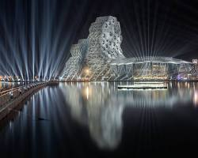

數位解構美學：港灣浪潮與幾何蜂巢的音樂殿堂

高雄流行音樂中心（高流）位於愛河灣核心地帶，由西班牙建築團隊「Manuel Alvarez-Monteserín Lahoz」與台灣團隊共同設計。設計師跳脫傳統公共建築四方規矩的框架，將高雄特有的「海洋意象」與現代「數位解構主義」相結合，打造出一個兼具國際前衛感與在地文理的動態建築群落。
高流最著名的視覺語彙莫過於其複雜的六角形幾何蜂巢結構。這種非線性的三維曲面設計，大量運用了現代數位參數化建模技術，使建築物在不同角度的陽光照射下，能呈現出如同海浪波光粼粼的動態光影變化。
高流的主體建築，外觀以大型「海浪」為造型。空間內部規劃有可容納高達四千至六千人的大型室內表演廳（海音館），以及作為流行音樂產業育成的辦公空間。高聳的塔身與特殊的網格狀鋼骨立面相互交織，不僅是視覺上的焦點，也滿足了專業音樂演出所需的超高挑空與聲學防音構造。
位於真愛碼頭區域，這座兩層樓高的多功能建築以「珊瑚礁」的平面流線作為設計靈感。屋頂採用不規則的流線幾何造型，內部則規劃為複合式的展覽空間、體驗中心與商業文創聚落。通透的玻璃帷幕設計，將室內的活動與戶外的愛河灣景致無縫串聯。
坐落於光榮碼頭一側，由 6 棟形似「躍動鯨魚」的獨立場館組成。建築頂部規劃為綠化的空中步道（鯨魚堤岸），市民可以順著緩坡走上鯨魚背脊，遠眺整個高雄港灣。內部則定位為中小型 Live House，為獨立音樂與次文化創作者提供了最靈活、通透的實驗性空間。
長達數百公尺的獨立高架步道，以「海豚躍動」的姿態串聯起音浪塔、珊瑚礁群與鯨魚群落。步道下方特別配合高雄輕軌動線，完美融合了大眾運輸、行人徒步與景觀公共空間，形成高流最具特色的「立體化動線系統」。